Префектура Сига · гора Хиэй · храмы
Энрякудзи на горе Хиэй: храм Сайтё, откуда вышел почти весь японский буддизм
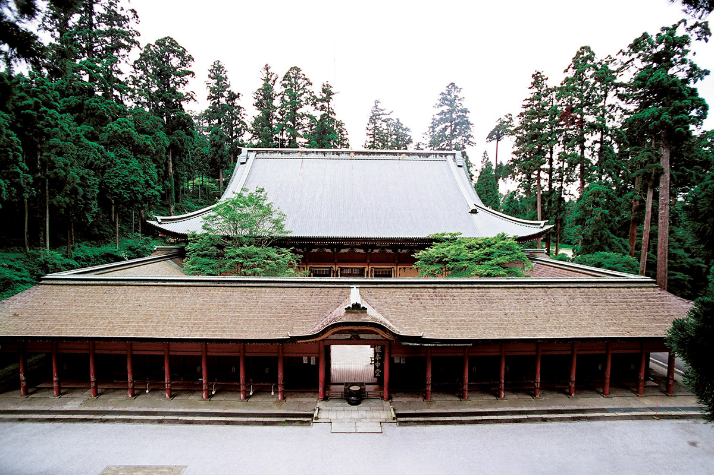
На горе Хиэй, над озером Бива и Киото, двенадцать веков стоит храм Энрякудзи. Его основал монах Сайтё, и почти все крупные школы японского буддизма так или иначе выросли из этой горной обители.
Основатель
Монах, который сделал гору школой
Энрякудзи, главный храм буддийской школы Тэндай, внесён в список Всемирного наследия ЮНЕСКО. Его залы рассыпаны по склонам горы Хиэй на границе префектуры Сига и Киото, среди кедров, которые часто тонут в горном тумане.
В 2021 году исполнилось 1200 лет со дня смерти Сайтё, и по этому случаю храм с сентября по декабрь открыл для посетителей две святыни, которые обычно закрыты: восточную пагоду Хоккэ-содзиин и зал Кайдан-ин, причём Кайдан-ин впервые. Обе связаны с Сайтё напрямую.
Святыни
Пагода и зал, куда монах входит раз в жизни
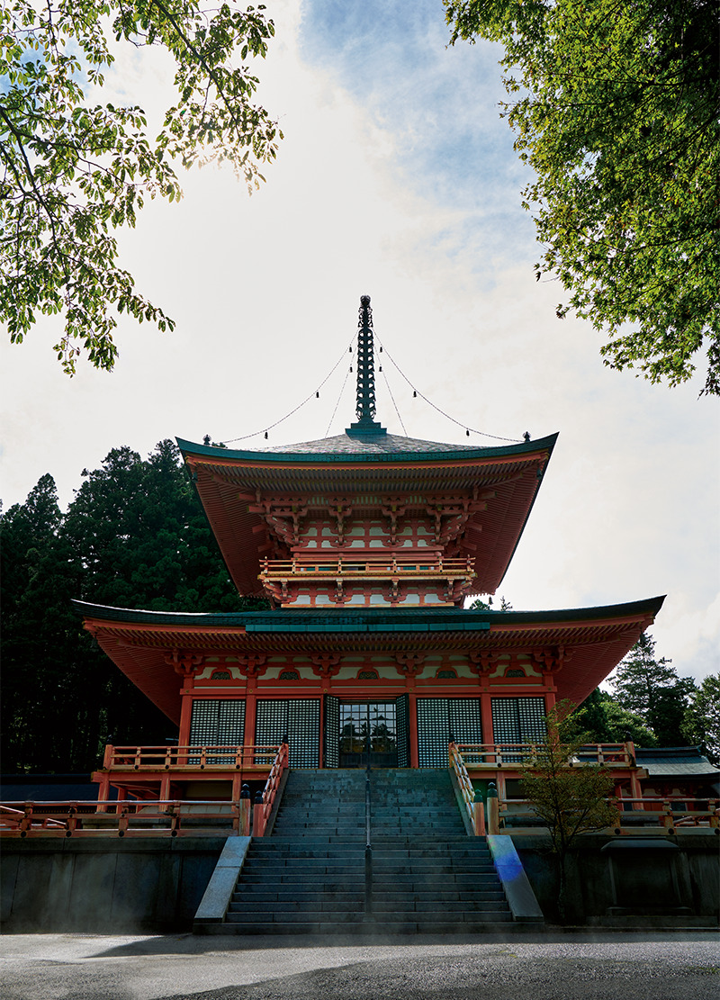
Красная пагода Хоккэ-содзиин поднимается прямо из кедровой рощи. Сайтё задумал шесть таких пагод по всей стране, чтобы силой Лотосовой сутры молиться о мире и покое. От пагод на востоке страны и на Кюсю остались только камни фундамента, а на Хиэй пагоду в 1980 году отстроили заново, через 400 лет после того, как храм сжёг Нобунага Ода.
Внутри пагоды потолок с глубокими кессонами покрыт сусальным золотом. В центре стоит Дайнити-нёрай, Будда, управляющий всей вселенной, а вокруг него статуи складываются в объёмную мандалу: спереди мир Тайдзокай, сзади мир Конгокай. По бокам идут росписи на сюжеты Лотосовой сутры. Так в одном пространстве соединяются Лотосовая сутра и эзотерический буддизм, и в этой многогранности весь Тэндай.
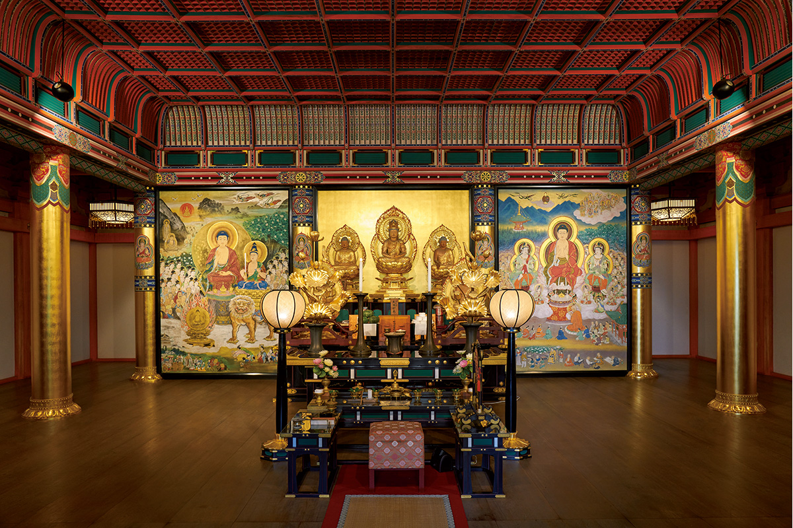
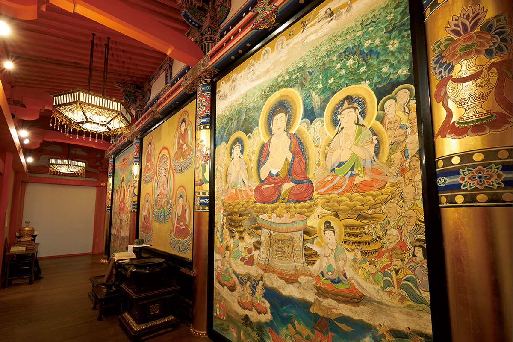
Зал Кайдан-ин считается одним из самых священных мест на горе. Здесь монахам дают обеты, после которых они становятся полноправными священнослужителями, и даже монах школы Тэндай входит сюда лишь однажды в жизни. Сайтё просил двор разрешить школе собственное место посвящения, и разрешение пришло за день до его смерти. Зал, по сути, воплощает его последнее желание. Внутри пол выложен камнем, и стоят три фигуры, нужные для обряда: Будда Шакьямуни, бодхисаттва Мондзю и бодхисаттва Мироку.
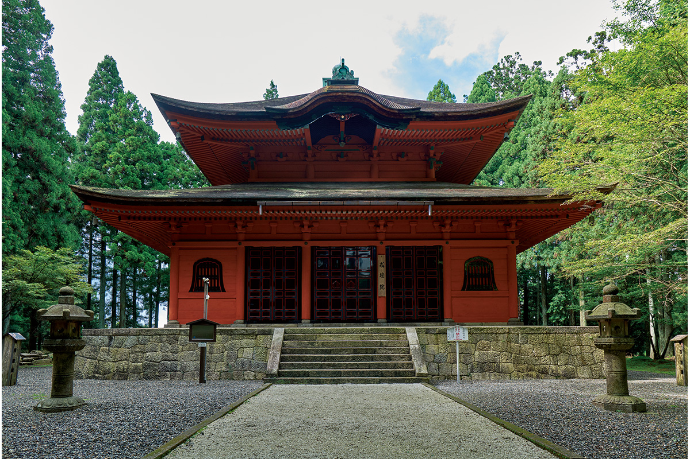
Учение
«Университет буддизма» в горном лесу
Если проследить корни японских буддийских школ, почти все они приводят на Хиэй. Сайтё учил, что каждое живое существо в равной мере может стать буддой, и школа Тэндай, которую он основал, вырастила целую плеяду великих монахов.
«Среди них, например, Хонэн и Синран, основавшие свои школы в эпоху Камакура, Эйсай и Догэн, ушедшие в дзэн, Нитирэн, который распространял Лотосовую сутру. А в эпоху Эдо отсюда вышел Тэнкай, служивший сёгуну Иэмицу Токугаве. Тэнкай построил в Уэно, в Токио, храм Канъэйдзи как точную копию Энрякудзи: видимо, гора Хиэй была ему особенно дорога»
представитель храма
Хонэн (1133–1212) основал школу Дзёдо, Синран (1173–1263) школу Дзёдо-синсю, Эйсай (1141–1215) и Догэн (1200–1253) принесли в Японию дзэн школ Риндзай и Сото, Нитирэн (1222–1282) основал школу своего имени. Поэтому Хиэй называют «горой-матерью японского буддизма». Но столько выдающихся учителей не появляется только благодаря таланту каждого. Похоже, здесь с самого начала была система, которая растила следующее поколение.
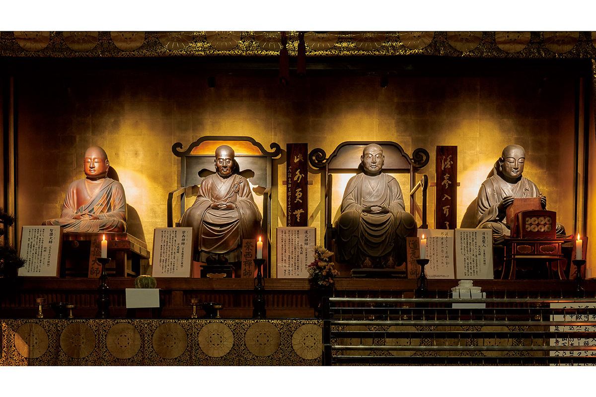
«На Хиэй изучают сразу пять совершенно разных направлений: прежде всего Лотосовую сутру, а также эзотерический буддизм, сидячую медитацию, монашеские правила и нэмбуцу. Каждый находит то, что ему ближе, и кто хочет, уходит в это глубже. Поэтому Тэндай и называют университетом буддизма»
представитель храма
Выходит, разнообразие здесь было нормой ещё 1200 лет назад: на горе построили открытую школу, где не делили учеников по школам и доктринам. Помогало и место, далёкое от людей.
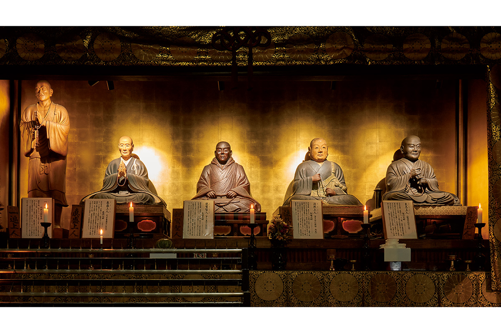
«Сайтё оставил слова: „Место важнее, чем собственное тело“. Стараться самому, конечно, важно, но прежде нужно создать условия, в которых можно целиком отдаться практике. Ночью в лесу слышны только голоса зверей. Лучшего места, чтобы сосредоточиться, не найти»
представитель храма
Практикой на горе считаются даже еда и уборка. Монахов, которые на годы затворяются на горе и подносят пищу Сайтё, учат постной кухне, где ничего не пропадает: с корнеплодов не срезают даже кожуру, только смывают с неё землю. Хорошее образование, разнообразие идей и школ, бережное отношение к ограниченным ресурсам: с эпохи Хэйан Хиэй живёт по тем принципам, которые сегодня называют устойчивым развитием.
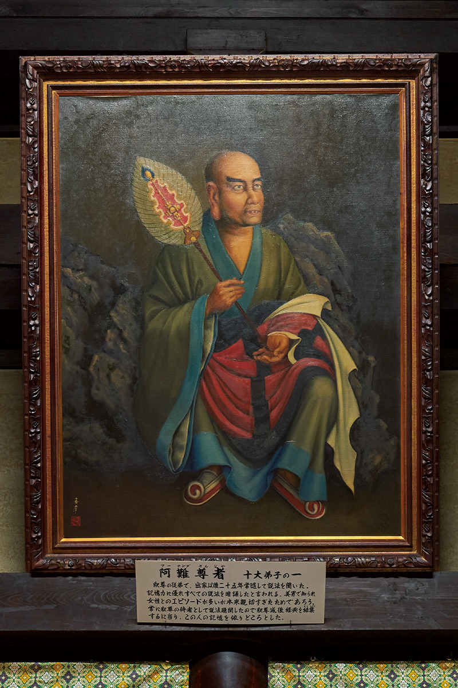
Сегодня
Неугасимый светильник
Главный девиз школы Тэндай звучит как «освещать свой уголок», и сегодня его знают далеко за пределами Японии.
«В 1986 году по призыву папы римского Иоанна Павла II религиозные лидеры со всего мира собрались в итальянском Ассизи на молитву о мире. Тогдашний глава школы Тэндай был так тронут, что попросил папу: со следующего года пусть такая молитва звучит и на горе Хиэй»
представитель храма
С тех пор каждый год 4 августа на Хиэй проходит «Встреча молитвы о мире во всём мире», куда приезжают представители разных религий. В 2021 году из-за пандемии её провели в малом составе и транслировали в интернете. Учения у всех разные, но желание мира одно, и уважение к чужим взглядам здесь продолжает ту же традицию, из которой вышло столько школ.
Символ Хиэй это «неугасимый светильник Закона». Чтобы огонь не погас, в лампу нужно всё время подливать свежее масло, и храм тоже открыт новому. Около 2021 года Энрякудзи начал работать с молодыми дизайнерами.
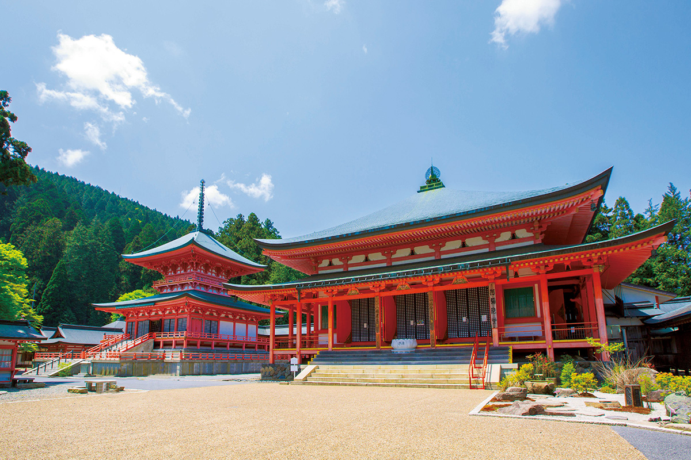
Самые удобные в быту плоды этой работы: сумка-тоут и круглый веер в стиле Гион с санскритскими знаками бондзи, которыми обозначают будд, в яркой поп-графике. Их придумала марка «Хикэси спирит» (HiKESHi SPiRiT), которая шьёт одежду с японскими узорами, и в 2021 году эти сувениры обсуждали в соцсетях.
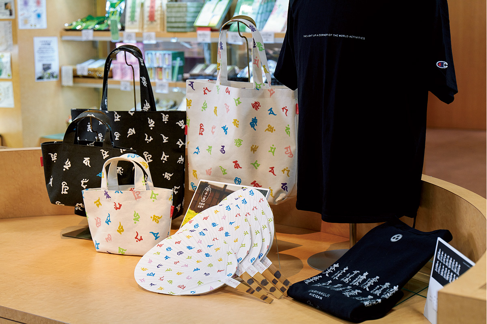
Где увидеть
Три района горы
Храм Энрякудзи делится на три района: Тото (Восточная пагода), Сайто (Западная пагода) и Ёкава. В районе Тото стоят пагода Хоккэ-содзиин и зал Кайдан-ин, о которых мы рассказали выше.
Ёкава
Район Ёкава открыл Эннин (794–864), третий глава школы Тэндай, известный под почётным именем Дзикаку-дайси. Здесь же жил монах Рёгэн (912–985), Гандзан-дайси, о чудесной силе которого ходит множество легенд.
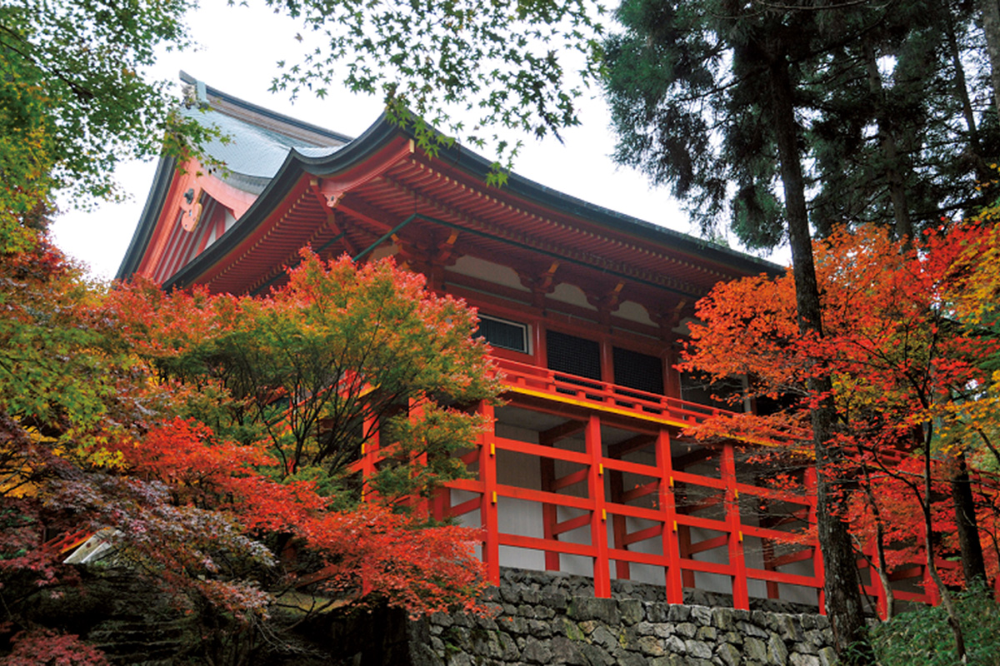
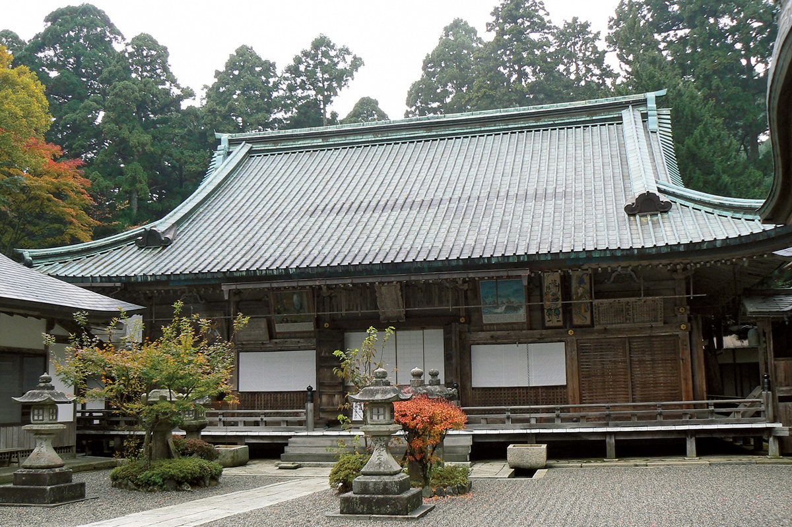
Сайто
Район Сайто открыл Энтё (772–837), второй глава школы Тэндай, Дзякко-дайси. Здесь стоит самое старое из сохранившихся зданий Энрякудзи, а в глубине леса похоронен сам Сайтё.
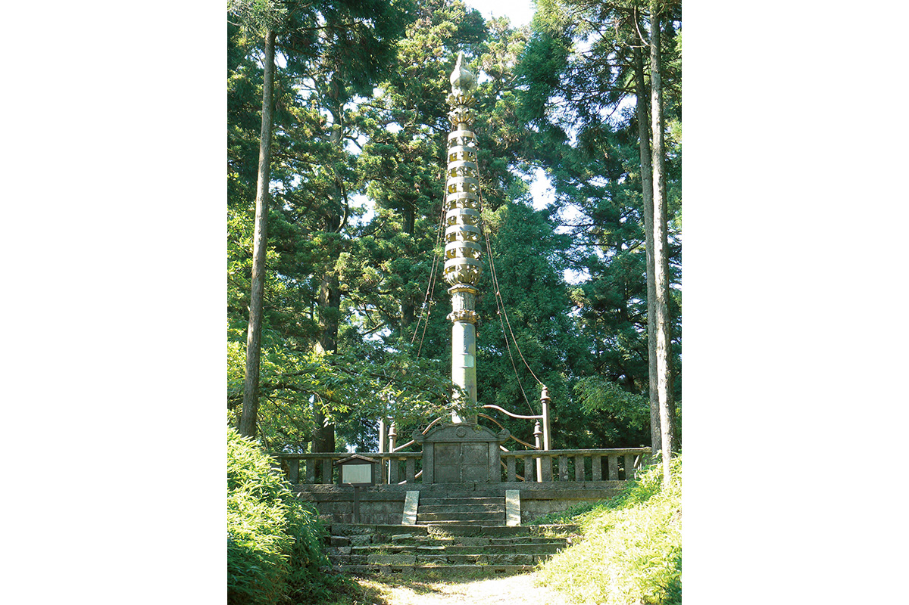
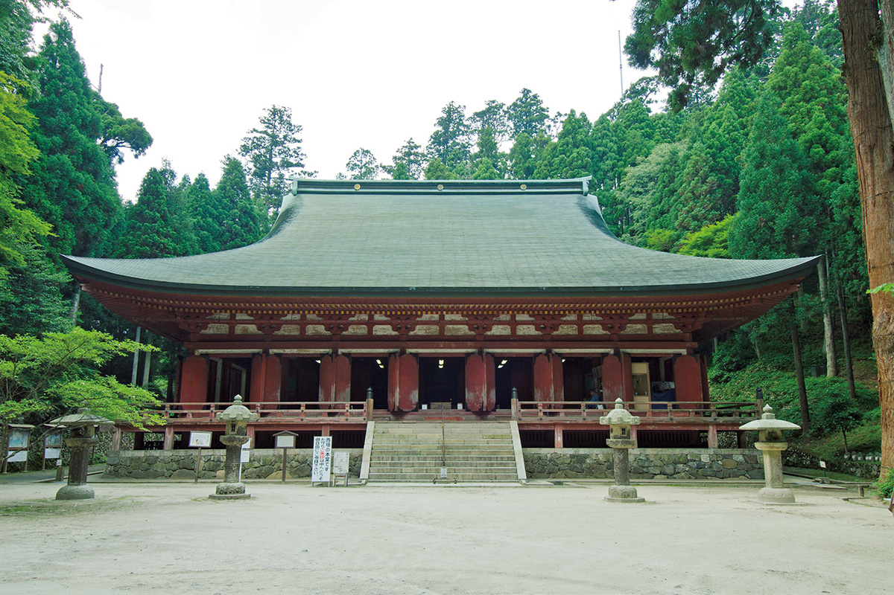
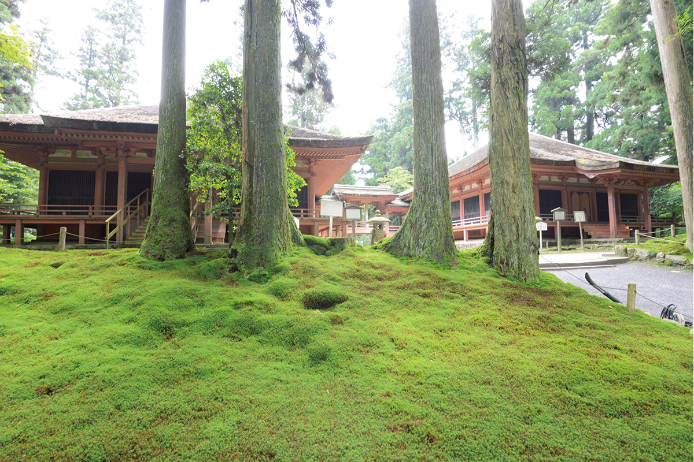
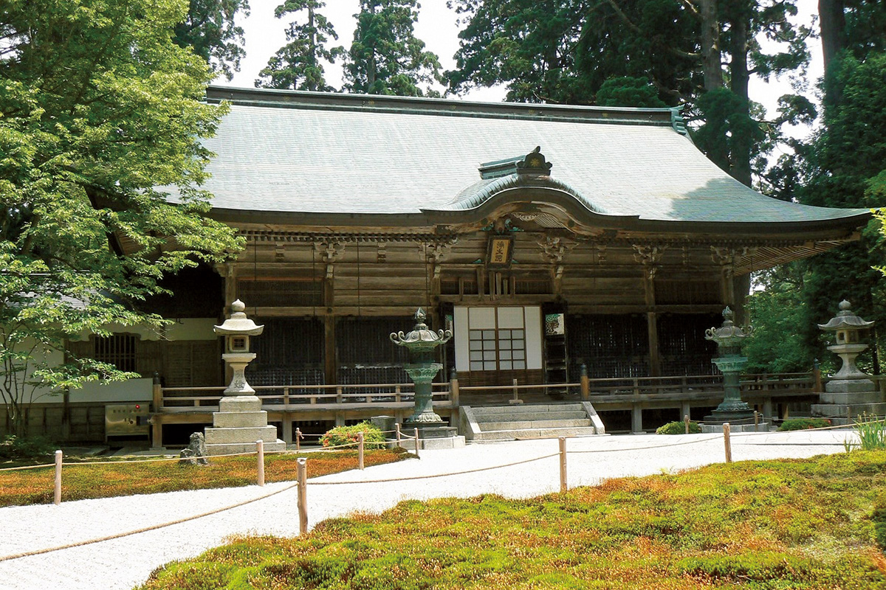
Храм Энрякудзи
- Адрес
- префектура Сига, Оцу, Сакамото-Хоммати, 4220
- Телефон
- +81 77-578-0001
- Часы работы
- Тото: 8:30–16:30 (март–ноябрь), 9:00–16:00 (декабрь), 9:00–16:30 (январь–февраль); Сайто и Ёкава: 9:00–16:00 (март–ноябрь), 9:30–15:30 (декабрь), 9:30–16:00 (январь–февраль). Вход до 30 минут до закрытия, зимой залы могут закрываться раньше
- Цены / Вход
- единый билет в Тото, Сайто и Ёкава 1000 иен для взрослых, 600 иен для старшеклассников и учеников средней школы, 300 иен для младших школьников; сокровищница Кокухо-дэн 500, 300 и 100 иен; набор из сокровищницы и единого билета 1500 и 900 иен
- Сайт
- hieizan.or.jp
Фото: Марико Тая.